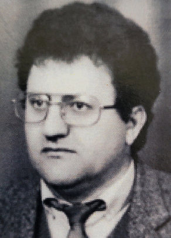

DRUGA GRANA PRVE OBITELJI TANDARA
2.0. Petar Tandara – Ivanov (1734.–1817.)
Petar Tandara bio je Ivanov drugi sin. Umro je 1817. godine u osamdeset i trećoj godini života, pa se procjenjuje da je rođen oko 1734. godine. Petar je bio oženjen Jelom rođ. Budić. Imali su sinove Grgu, Jakova (1773.), Martina, Marijana (1781.–), Miju, Tadiju i Marka (1787.–), te kćeri Mandu (1777.–) i Jelu (–1824.). Sinovi Jakov (1773.–), Marijan (1781.–), Tadija i Marko (1787.–), ne pojavljuju se na Popisu duša iz 1806. godine, a Tadija je izostavljen s popisa iz 1819. godine, pa se može pretpostaviti da više nisu bili među živima ili je netko od njih odselio iz Ričica.
2.1. Grgo Petrov (1770.–)
Grgo, najstariji Petrov sin, oženio se Ružom rođ. Pušić. Imali su sina Šimuna i kćer Ivu (1798.–).
2.1.1. Šimun Grgin (1800.–1874.)
Šimun je bio oženjen Jelom rođ. Budimir, s kojom je imao sina Matu (1826.–) te kćeri Ivu (1831.–), Matiju (1837.–) i Martu (1845.–). O sinu Mati postoje samo podaci o godini rođenja, pa se ne može utvrditi njegov daljnji životni put niti okolnosti koje su dovele do toga da o njemu nema sačuvanih zapisa. Nakon sina Mate Šimunova se loza ugasila.
2.2. Martin Petrov (1775.–1844.)
Martin, treći Petrov sin, oženio se Ružom rođ. Lekić. U razdoblju između popisa iz 1806. i 1819. godine Martin se sa svojom obitelji, zajedno s Antom Antinim Strčevićem, preselio iz Ričica u Zavelim. Imali su sinove Ivana, Juru (1811.–), Miju, Grgu, Filipa (1821.–) i Josipa (1824.–) te kćeri Matiju i Anu (1828.–). Za Juru, Filipa i Josipa nisu pronađeni drugi zapisi osim onih o njihovu krštenju, pa nije poznato jesu li umrli mladi ili su se odselili. Mijini sinovi nisu ostavili muške potomke, pa su obiteljsku lozu nastavili samo Martinovi sinovi Ivan i Grgo.
2.2.1. Ivan Martinov (1807.–1877.)
Ivan, najstariji Martinov sin, oženio se 1826. Anticom rođ. Lažeta. Ivan i Antica imali su tri sina: Marijana (1828.–1828.), Tomu i Juru (1840.–) te kćeri Ružu (1834.–), Ivu, Jozu (1839.–1839.) i Matiju (1841.–). O Juri nisu pronađeni drugi podaci osim zapisa o njegovu rođenju. Toma je bio jedini nasljednik Ivanove loze i začetnik loze pod nadimkom TROMIĆI.
2.2.2. Mijo Martinov (1814.–)
Treći Martinov sin i njegova žena Matija rođ. Parlov imali su osmero djece: dva sina, Martina (1850.–) i Miju (1851.–1851.), te kćeri Luciju (1836.–1836.), Mandu (1838.–1838.), Božu (1839.–), Jozu (1845.–), Mariju (1852.–) i Matiju (1856.–). Mijo je umro nakon rođenja, a o Martinu nema drugih zapisa osim onoga o njegovu rođenju. Ne zna se je li umro ili se odselio. Nakon Martina ugasila se Mijina loza.
2.2.3. Grgo Martinov (1818.–)
Grgo Martinov se ženio dvaput. Iz prvog braka s Rosom rođ. Budimir imao je sina Lovru i kćer Jaku (1845.–). U drugom braku s Jakom rođ. Knežević, Grgo je imao sinove Matu (1853.–1856.) i Miju, te kćeri Matiju (1850.–), Jozu (1861.–1878.) i Veroniku (1866.–).
2.3. Mijo Petrov (nema podataka za godine)
Mijo Petrov, peti Petrov sin, koji se oženio Ružom nepoznatog prezimena, imao je samo kćer Matiju (1810.–). Mijo nije imao nasljednika loze. Godine 1819. obitelj Martina Tandare, Lovrina djeda, bila je u Zavelimu. Na tom su popisu navedeni Martinovi sinovi Ivan, Mijo i Grgo. Kad je 1835. godine izrađivan austrijski katastar, Martin Tandara pok. Petra upisan je kao posjednik nekretnina u Ričicama. Većina ričićkih plemena imala je u to vrijeme nekretnine u Ričicama, Zavelimu, Podbiloj i Viru. Navedena sela imala su zajedničku župu u Ričicama. Mnoge obitelji unutar jednog roda selile su se s jednog lokaliteta na drugi, čak i u samim Ričicama. Broj stanovnika je naglo rastao i tražili su se novi prostori za život. U tom kontekstu možemo razumjeti i prihvatiti činjenicu da je neka obitelj, ili njezin dio, u jednom popisu bila u Ričicama, a u sljedećem u Zavelimu ili obrnuto. Međutim, pouzdano se zna da se Grgo s djecom iz Zavelima vratio u Ričice i ondje nastavio život sa svojom obitelji.
POČETAK MIGRACIJA IZVAN RIČICA
Godine 1819. obitelj Martina Tandare, Lovrina djeda, bila je u Zavelimu. Na tom su popisu navedeni Martinovi sinovi Ivan, Mijo i Grgo. Kad je 1835. godine izrađivan austrijski katastar, Martin Tandara pok. Petra upisan je kao posjednik nekretnina u Ričicama. Većina ričićkih plemena imala je u to vrijeme nekretnine u Ričicama, Zavelimu, Podbiloj i Viru. Navedena sela imala su zajedničku župu u Ričicama. Mnoge obitelji unutar jednog roda selile su se s jednog lokaliteta na drugi, čak i u samim Ričicama. Broj stanovnika je naglo rastao i tražili su se novi prostori za život. U tom kontekstu možemo razumjeti i prihvatiti činjenicu da je neka obitelj, ili njezin dio, u jednom popisu bila u Ričicama, a u sljedećem u Zavelimu ili obrnuto. Međutim, pouzdano se zna da se Grgo s djecom iz Zavelima vratio u Ričice i ondje nastavio život sa svojom obitelji.
TROMIĆI
2.2.1.1. Toma Ivanov (1830.–)
Toma je bio oženjen Tomicom rođ. Kovač. Imali su sinove Ivana (1866.–), Matu (1870.–), Juru i ponovno Ivana (1879.–1879.). Jedini Tomin nasljednik bio je sin Jure. Tomina loza u Zavelimu bila je poznata pod nadimkom TROMIĆI, nastalim prema predaji o njihovoj visini i sporom, tromom hodu.
LOZA JURE TOMINA
2.2.1.1.1. Jure Tomin (1874.–1931.)
Treći Tomin sin i jedini nasljednik uzeo je za ženu Ivu rođ. Lažeta. Imali su sinove Tomu (1909.–1914.) i Ivana (1911.–1915.), zatim Pia, Dominika i Matu, te kćer Matiju (1908.–). Lozu su nastavili sinovi Pio, Dominik i Mate.
2.2.1.1.1.1. Pio Jurin (1916.–1990.)
Pio, treći Jurin sin, uzeo je za suprugu Tereziju rođ. Budimir s kojom je dobio sinove Ivana, Juru i Jozu, te kćer Maru (1937.–).
2.2.1.1.1.1.1. Ivan Piin (1935.–2025.)
Ivan je bio oženjen Marijanom rođ. Petter s kojom je dobio sina Dinu i kćer Romanu. Obitelj danas živi u Zagrebu.
2.2.1.1.1.1.1.1. Dino Ivanov (1964.–)
Dino je oženio Matildu rođ. Klepikapić s kojom ima kćeri Hedvigu (1991.–), Leonardu (1995.–) i Luciju (1999.–). Nema muških potomaka. Obitelj živi u Zagrebu.
2.2.1.1.1.1.2. Jure Piin (1943.–2004.)
Jure je bio oženjen Milom rođ. Škorić s kojom je dobio sina Tomislava (1972.–) i kćeri Mariju (1968.–), Angelu (1971.–) i Nediljku (1972.–). Tomislav se nije ženio. Obitelj živi u Stobreču.
2.2.1.1.1.1.3. Jozo Piin (1949.–2019.)
Jozo je oženio Mirjanu rođ. Generalić s kojom ima sina Domagoja (1978.–) i kćeri Terezu (1973.–) i Zrinku (1975.–). Obitelj živi u Splitu.
2.2.1.1.1.2. Dominik Jurin (1919.–1987.)
Četvrti Jurin sin oženio je Maru rođ. Knezović i s njom dobio sinove Antu (1948.–), Barišu (1950.–), Nikolu (1953.–), Pia (1954.–), Svetu (1958.–) i Ivana (1963.–), te kćer Olgu (1965.–). Ante, Nikola, Pio i Sveto nemaju mušku djecu. Za Barišu nema podataka o ženidbi. Jedino su Ivanovi sinovi nasljednici Dominikove loze.
2.2.1.1.1.2.1. Ante Dominikov (1948.– )
Ante je bio oženjen Dubravkom rođ. Pencinger s kojom je dobio kćeri Anu Mariju (1978.–) i Ozanu (1982.–). Obitelj živi u Križevcima.
2.2.1.1.1.2.2. Bariša Dominikov (1950.– )
Bariša Dominikov je oženjen Nadom (prezime nije poznato) i s njom nema djece.
2.2.1.1.1.2.3. Nikola Dominikov (1953.– )
Nikola je oženio Nadu rođ. Jurčević, s kojom je dobio kćeri Marijanu (1974.–), Ivu (1975.–), Brigitu (1979.–) i Anitu (1982.–). Nakon povratka, Nikola ponovno živi u Tandarama u Zavelimu.
2.2.1.1.1.2.4. Pio Dominikov (1954.– )
Pio se oženio Ljubinom rođ. Krinulović s kojom je dobio kćeri Tinu i Piu. Obitelj živi u Beču, u Austriji.
2.2.1.1.1.2.5. Sveto Dominikov (1958.–)
Sveto se dvaput ženio. U prvom braku s Petrom rođ. Lukić dobio je kćer Danielu (1982.–). U drugom braku s Verom rođ. Rakin dobio je kćer Eni (1997.–).
2.2.1.1.1.2.6. Ivan Dominikov (1963.–)
Ivan Dominikov je oženio Mirjanu rođ. Tandara s kojom ima sinove Dominika (1990.–) i Davida. Obitelj živi u selu Tandare u Zavelimu.
2.2.1.1.1.3. Mate Jurin (1922.–1963.)
Mate, peti Jurin sin, oženio je Maru rođ. Budić s kojom je dobio sinove Tomislava i Miju (1955.–1960.), te kćer Matiju (1952.–).
2.2.1.1.1.3.1. Tomislav Matin (1947.–2014.)
Oženio je Božicu rođ. Golubiček s kojom ima sina Matu i kćer Martinu (1978.–). Obitelj se preselila u Zagreb.
2.2.1.1.1.3.1.1. Mate Tomislavov (1980.–)
Oženio je Ivanu rođ. Trošelj s kojom je dobio kćer Tenu (2006.–). Obitelj danas živi u Zagrebu.
LOZA LOVRE GRGINA
2.2.3.1. Lovro Grgin (1842.–1922.)
Lovro se oženio Ivom rođ. Parlov, s kojom je dobio sinove Antu, Ivana (1876.–) i Marijana, te kćeri prvu Luciju (1864.–1876.), Ivu (1884.–1908.) i drugu Luciju (–1877.). Ante i Marijan bili su jedini nasljednici loze. Njihovi su potomci imali trideset troje djece. U Matičnoj knjizi umrlih župe Ričice zapisano je da su Lovrinu kćer Lucu u trinaestoj godini života „ubile stine“.
2.2.3.1.1. Ante Lovrin (1871.–1933.)
Ante Lovrin bio je oženjen Tomicom rođ. Lukić i s njom je imao sinove Ivana, Marijana, prvoga Matu (1906.–1907.), drugoga Matu (1910.–) i Nikolu (1915.–1981.), te kćeri Martu (1901.–), Ivu (1905.–1911.) i Matiju (1908.–). Nasljednici loze bili su Ivan, Marijan, Mate i Nikola.
2.2.3.1.1.1. Ivan Antin (1896.–)
Najstariji Antin sin oženio se Marom rođ. Mršić. Imali su sinove Lovru, Mirka, Matu, Antu Vladu i Nikolu (1941.–), te kćer Tomicu (1930.–). Ivan je odselio u Slatinu, a Ivanovi potomci danas žive u Predavcu kod Bjelovara, Slatini, Obrovcu, Zagrebu i Njemačkoj.
2.2.3.1.1.2. Marijan Antin (1898.–1933.)
Marijan Antin bio je u braku s Milicom rođ. Mikulić i imao je sinove Franu (1927.–1945.), koji je poginuo u Beču, i Antu (1929.–1929.), te kćeri Mariju (1930.–) i Stanu (1932.–1933.). Marijan je umro od upale pluća u trideset i petoj godini života. Marijanovi sinovi nisu imali potomaka, pa se njegova loza ugasila.
2.2.3.1.1.3. Mate Antin (1910.–1991.)
Mate, Antin sin, bio je oženjen Marom rođ. Knežević. Imali su sinove Antu Brunu i Franu, te kćeri Anu (1935.–), Dinku (1945.–) i Olgu (1952.–).
2.2.3.1.1.4. Nikola Antin (1915.–1981.)
Nikola Antin bio je oženjen Tomicom rođ. Budimir s kojom je imao sinove Antu (1950.–1950.), Dragu, Jerka i Ivana (1955.–1955.), te kćeri Matiju (1944.–), Branku (1947.–) i Mariju (1948.–). Jerko je bio oženjen Stankom rođ. Racetin, s kojom je imao kćer Anu (1985.–). Drago je jedini nasljednik loze i njegovi sinovi danas žive u Ričicama.
2.2.3.1.1.1.1. Lovre Ivanov (1925.–)
Lovre kao najstariji Ivanov sin oženio je Roziku rođ. Peška s kojom je dobio dvije kćeri, Šteficu (1955.–) i Anu (1967.–). Obitelj živi u Slatini.
2.2.3.1.1.1.2. Mirko Ivanov (1928.–)
Mirko je oženio Danicu rođ. Lukić s kojom je dobio sinove Ivana i Veselka, te kćer Mirjanu (1957.–). Obitelj živi u Predavcu kraj Bjelovara.
2.2.3.1.1.1.2.1. Ivan Mirkov (1961.–)
Stariji Mirkov sin Ivan oženio je Nadu rođ. Kegalj i s njom dobio sinove Roberta i Kristijana. Obitelj živi u Predavcu kraj Bjelovara.
2.2.3.1.1.1.2.2. Veselko Mirkov (1964.–)
Mlađi Mirkov sin Veselko oženio je Martinu rođ. Höhmann i s njom ima sina Mirka i kćer Janinu. Obitelj živi u Predavcu.
2.2.3.1.1.1.3. Mate Ivanov (1932.–1970.)
Treći Ivanov sin oženio se Marijom rođ. Srebrnjak, s kojom je imao samo kćer Sandru (1967.–).
2.2.3.1.1.1.4. Ante Vlade, Ivanov (1934.–)
Četvrti Ivanov sin, Ante Vlade, ženio se dva puta. U prvom braku s Karinom rođ. Mesch dobio je sinove Johana i Franza, te kćer Veroniku. U drugom braku s Tonkom rođ. Zanne nije imao djece. Obitelj se preselila u Obrovac.
2.2.3.1.1.1.4.1. Johan Ante Vladin (1960.–)
Johan i njegova supruga Katarina rođ. Köniks imaju sina Gerda i kćer Maditu. Obitelj živi u Njemačkoj.
2.2.3.1.1.1.4.2. Franz Ante Vladin (1966.–)
Franz je oženio Honolore rođ. Genesen s kojom ima sina Marvina. Obitelj živi u Njemačkoj.
2.2.3.1.1.3.1. Ante Bruno Matin (1937.–1989.)
Doktor Bruno rođen je 7. listopada 1937. u Ričicama. Godine 1968. oženio se Vanjom rođ. Brkljača i s njom dobio sina Zvonimira, te kćeri Zrinku i Tomislavu.
Dr. Ante Bruno bio je hrvatski liječnik, narodni zastupnik u Saboru SR Hrvatske i sudionik Hrvatskog proljeća. Na izborima 1969. godine izabran je za zastupnika, a nakon sloma Hrvatskog proljeća oduzet mu je zastupnički imunitet.
Zbog svojega političkog djelovanja bio je uhićen i osuđen na dvije godine i četiri mjeseca strogog zatvora, koje je odslužio u Staroj Gradiški.

2.2.3.1.1.3.1.1. Zvonimir, Ante Brune (1973.–)
Zvonimir Brunin je oženio Anetu rođ. Gacek s kojom ima sina Oskara. Obitelj živi u Supetru na Braču.
2.2.3.1.1.3.2. Frane Matin (1947.–)
Mlađi Matin sin Frane oženio se Matijom rođ. Topalušić. Imali su sinove Matu i Antu (1976.–), te kćer Elzu (1978.). Žive u Ričicama.
2.2.3.1.1.3.2.1. Mate Franin (1973.–)
Mate se oženio Anom Marijom rođ. Vlahović s kojom ima sinove Antu i Franu, te kćer Leonardu. Obitelj živi u Ričicama.
2.2.3.1.1.4.1. Drago Nikolin (1952.–)
Drago sa suprugom Zdenkom rođ. Budimir dobio je dva sina, Nikolu (1976.–) i Ivicu (1978.–). Sin Nikola Tandara je svećenik monfortanac u Poljskoj. Obitelj živi u Ričicama.
2.2.3.1.1.4.1.1. Ivica Dragin (1978.–)
Ivica sa suprugom Jelenom rođ. Perić ima sina Nikolu i kćer Lauru. Žive u Ričicama.
2.2.3.1.1.4.2. Jerko Nikolin (1953.–)
Treći Nikolin sin oženio je Stanku rođ. Racetin s kojom ima kćer Anu (1985.–). Muških potomaka nema. Obitelj živi u Ričicama.
LOZA MARIJANA LOVRINA
2.2.3.1.2. Marijan Lovrin (1881.–1939.) - nadimak potomaka: LOVRIĆI
Marijan je oženio Lucu rođ. Parlov s kojom je dobio sinove Miju, Marina, Petra i Ivana (1924.–1925.), te kćeri Matiju (1907.–), Anu (1910.–), Ivu (1918.–2005.) i Tomicu (1921.–). Ivan je umro nedugo nakon rođenja.
2.2.3.1.2.1. Mijo Marijanov (1908.–)
Najstariji Marijanov sin Mijo bio je u braku sa Slavkom rođ. Sabljić s kojom je dobio devetero djece: sinove Vinka, Ivana (1932.–1932.), Milana, Marijana i ponovno Ivana (1950.–1952.), te kćeri Milu-Ivu (1933.–), Anicu (1935.–), Nadu (1940.–) i Macu (1947.–). Samo su sinovi Vinko, Milan i Marijan nastavili Mijinu lozu. Vinkovi i Milanovi potomci danas žive u Ričicama, Splitu, Zagrebu, Austriji i Njemačkoj.
2.2.3.1.2.1.1. Vinko Mijin (1930.–)
Vinko je oženio Maru Dragicu rođ. Budimir s kojom je dobio sinove Milenka (1955.–1956.) i Svetka, te kćeri Dragicu (1957.–) i Milosavu (1959.–).
2.2.3.1.2.1.1.1. Svetko Vinkov (1960.–)
Svetko je oženio Nevenku rođ. Tavra s kojom je dobio sina Kristijana.
2.2.3.1.2.1.2. Milan Mijin (1938.–)
Milan Mijin je oženio Stanu rođ. Tandara s kojom je dobio tri sina: Nediljka, Željka i Tihomira, te kćer Slavicu (1965.–).
2.2.3.1.2.1.2.1. Nediljko Milanov (1962.–)
Nediljko je oženio Vesnu rođ. Mandić s kojom je dobio sina Milana, te kćeri Anu Mariju i Elizabetu.
2.2.3.1.2.1.2.2. Željko Milanov (1967.–2020.)
Željko je oženio Valeriju rođ. Glavota s kojom je imao tri kćeri: Mihaelu, Mariju i Stanu. Muških potomaka nije imao.
2.2.3.1.2.1.2.3. Tihomir Milanov (1969.–)
Tihomir je oženio Anicu rođ. Miloš s kojom je dobio sina Milana i kćer Ivanu.
2.2.3.1.2.1.3. Marijan Mijin (1942.–)
Marijan je oženio Milenku rođ. Budimir i s njom ima sina Marija i kćer Silvanu (1965.–).
2.2.3.1.2.1.3.1. Mario Marijanov (1974.–)
Mario je oženio Jasminku rođ. Ilić i nema muških potomaka koji bi nastavili lozu.
2.2.3.1.2.2. Marin Marijanov (1912.–1989.)
Marin je oženio Matiju rođ. Žuljić s kojom je dobio sinove Marijana (1941.–1943.), Alojza, Luku (1948.–1948.), Vicu i Blaža, te kćeri Dragicu (1938.–), Nevenku (1944.–) i Anku (1954.–). Marinovi potomci danas žive u Ričicama, Splitu, Zagrebu i Njemačkoj.
2.2.3.1.2.2.1. Alojz Marinov (1946.–)
Alojz je oženio Dragicu rođ. Jurčević s kojom ima sina Roberta (1970.–) i kćer Zrinku (1971.–).
2.2.3.1.2.2.1.1. Robert Alojzov
Robert je oženio Sabinu rođ. Patzak s kojom ima sina Marca Marina i kćeri Carolinu Victoriu i Lauru Nadine.
2.2.3.1.2.2.2. Vice Marinov (1949.–)
Vice Marinov je oženjen Ružicom rođ. Barnjak s kojom nema djece. Vicu navodim kao zaslužnog pojedinca za pokretanje ovog projekta.
2.2.3.1.2.2.3. Blaž Marinov (1953.–)
Blaž je oženio Zoranu rođ. Čariju s kojom je dobio tri sina: Marija (1977.–), Antu (1980.–) i Vicu (1983.–). Vice se nije ženio.
2.2.3.1.2.2.3.1. Mario Blažev (1977.–)
Mario je oženio Josipu rođ. Artić s kojom ima sina Lovru i kćer Tonku.
2.2.3.1.2.2.3.2. Ante Blažev (1980.–)
Ante je oženio Tanju rođ. Koren s kojom ima sina Petra. Obitelj živi u Ričicama.
2.2.3.1.2.3. Petar Marijanov (1915.–)
Petar je oženio Zorku rođ. Pavić s kojom je dobio sina Antu (1942.–1943.), te kćeri Milu (1947.–), Mariju (1950.–), Ankicu (1952.–), Miru (1954.–), Zorku (1955.–), Rosu (1958.–) i Nadu (1960.–1962.). Petar nije imao nasljednika loze.
2.2.3.2. Mijo Grgin (1856.–1933.)
Treći Grgin sin Mijo oženio se Ivom rođ. Tandara, s kojom je dobio sedmero djece: sinove Martina (1886.–1905.), prvoga Nikolu (1889.–), Matu (1892.–) i drugoga Nikolu (1902.–), te kćeri Ivu (1883.–), prvu Maru (1886.–1891.) i drugu Maru (1894.–). Martin je umro u dobi od 19 godina, a prvi Nikola i Mate umrli su kao mala djeca. O drugom Nikoli nema drugih podataka osim zapisa o njegovu rođenju. Ni za jednoga Mijina sina nema podataka da se ženio ili imao djecu, pa se njegova obiteljska grana time ugasila.
Interaktivni dijagram Petrove grane
Otvorite pripadajući interaktivni rodoslovni dijagram ove obiteljske grane.
Napomena
Kompletno rodoslovno stablo ove obiteljske grane nalazi se u desnom interaktivnom dijagramu na početnoj stranici Digitalnog arhiva roda Tandara.
Na početnoj stranici odaberite klikabilni okvir pod nazivom „Petrova grana”. Klikom na taj okvir otvara se odgovarajući dio rodoslovnog stabla s potomcima ove grane.